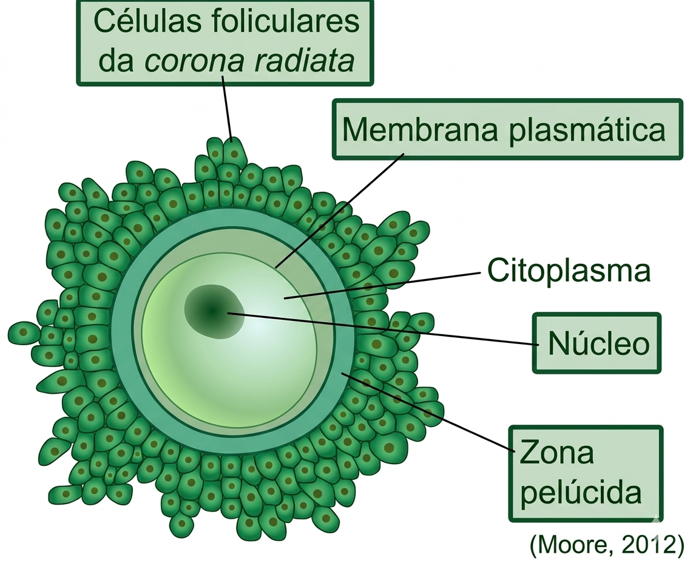

🎯 Muito cobrado em provas: o oócito primário bloqueia na Prófase I (dictioteno) desde a vida fetal. O pico de LH reduz o AMPc intracelular e derruba esse bloqueio. O oócito secundário bloqueia na Metáfase II até a penetração do espermatozóide.
Clique em cada fase para ver detalhes
Oogônia (2n)
Multiplicação por mitose · vida fetal exclusivamente
Oócito primário (2n) bloqueio Prófase I
Dictioteno · mantido pelo AMPc das células do cumulus
Conclusão da Meiose I gatilho: pico de LH
LH reduz AMPc → retomada da meiose pouco antes da ovulação
Oócito secundário (n) + 1º CP bloqueio Metáfase II
Estágio ovulado na maioria dos mamíferos domésticos
Ovum (n) + 2º CP gatilho: fecundação
Penetração do sptz → ativação → conclusão da Meiose II
Clique em uma fase acima para ver a explicação detalhada.
🔗 Regulação hormonal (resumo): retomada da meiose depende do pico de LH · crescimento folicular inicial dirigido por FSH. Detalhes do eixo HPG no capítulo de Neuroendocrinologia.
Mnemônico
Oogônia → Oócito I (bloq. Prófase I · AMPc) LH↑ → AMPc↓ → Meiose I → Oócito II (bloq. Met. II) Sptz penetra → Meiose II → Ovum + 2º CP
Clique em cada fase para ver detalhes
Espermatogônia (2n)
Células-tronco; renovação contínua após a puberdade
Espermatócito I (2n)
Meiose I · fase mais longa; crossing-over na Prófase I
Espermatócito II (n)
Meiose II rápida → duas espermátides cada
Espermátide (n)
Haplóide redonda · sem mais divisões; inicia diferênciação
Espermiogênese diferênciação, sem divisão
Formação do acrossomo, flagelo, compactação do DNA
Espermatozóide (n)
Motilidade progressiva adquirida no epidídimo (~10-14 dias)
Clique em uma fase acima para ver a explicação detalhada.
🔗 Regulação hormonal (resumo): processo dependente de FSH (nas células de Sertoli) e testosterona (LH → células de Leydig). Detalhes do eixo HPG no capítulo de Neuroendocrinologia.
Duração total por espécie
Suíno
~34
dias
Ovino
~49
dias
Equino
~57
dias
Bovino
~61
dias
Canino
~62
dias
Humano
~74
dias
Mnemônico
Gônia → Espócito I → Espócito II → Espermátide Espermiogênese (diferência, não divide) → Sptz Motilidade progressiva: adquirida no epidídimo
🎯 Muito cobrado em provas: o oócito ovulado encontra-se em Metáfase II e somente completa a meiose após a fecundação.
Clique em cada estrutura para ver detalhes
Oócito primário (2n)
Parado em Prófase I (dictioteno) desde a vida fetal
Oócito secundário (n) estágio ovulado
Parado em Metáfase II · aguarda fecundação
Zona Pelúcida
Matriz glicoproteica (ZP1-4) · ligação com sptz + bloqueio polispermia
Corona radiata / Cumulus oophorus
Células da granulosa · nutrição, suporte e sinalização
Citoplasma (ooplasma)
Rico em organelas · reserva para o desenvolvimento inicial do embrião
Clique em uma estrutura acima para ver a explicação detalhada.
🔗 Conexões rápidas
LH → retoma a meiose (derruba bloqueio da Prófase I)
Fertilização → completa a Meiose II (via influxo de Ca²⁺ → inativa CSF)
Zona pelúcida → interação espécie-específica com espermatozoide (ZP3/ZP2)
Cumulus → relevante em biotecnologias: OPU, FIV, ICSI
Mnemônico
Primário (2n) → Prófase I (dictioteno) Secundário (n) → Metáfase II (ovulado) → fecundação completa meiose II ZP = interação sptz + bloqueio polispermia | Cumulus = nutrição + biotec

Estrutura do oócito: corona radiata, membrana plasmática, núcleo e zona pelúcida (Moore, 2012)
Clique em cada compartimento para ver detalhes
Cabeça
Acrossomo + núcleo haplóide
Peça intermediária
Mitocôndrias em espiral
Cauda (flagelo)
Axonema 9+2
Epidídimo
Maturação e reservatório
Capacitação
Trato reprodutivo feminino
Reação acrossômica
Fusão com zona pelúcida
Morfologia espermática comparada
Ilustrações em escala relativa entre espécies. Clique em cada card para ver características detalhadas.
Bovino
8-9 µm
Equino
6-7 µm
Suíno
8-9 µm
Ovino
7-8 µm
Canino
6-7 µm
Felino
5-6 µm
Clique em uma espécie acima para ver características detalhadas.